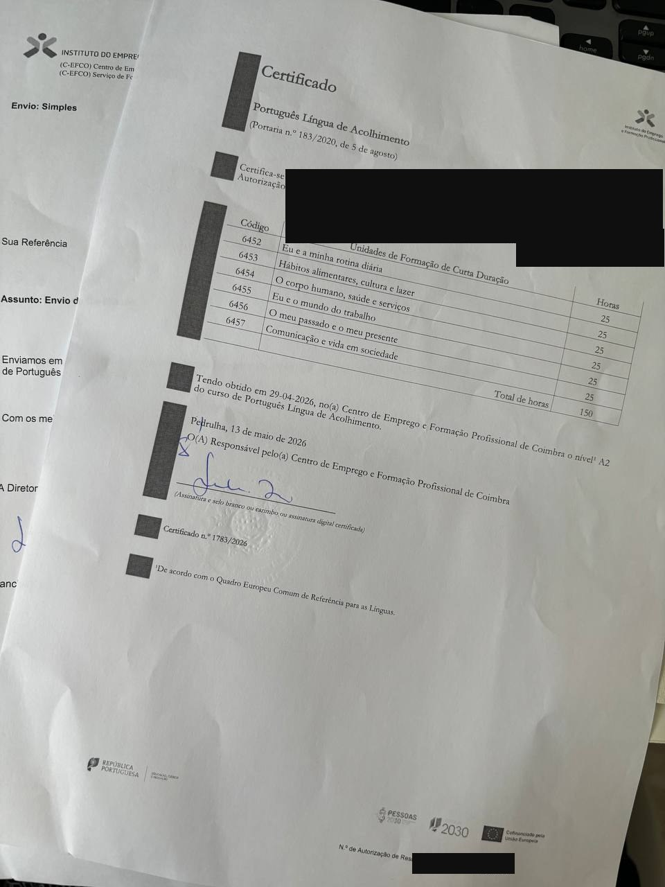

Главное кратко
Если коротко — вот что нужно знать про португальский язык для гражданства Португалии в 2026 году:
- A2 — минимум. Это нижняя планка по шкале CEFR. Без A2 заявку не примут (исключение — граждане CPLP).
- Два главных пути: PLA или CIPLE. Курс Português Língua de Acolhimento на 150 часов (бесплатно, нужен легальный статус) или одноразовый экзамен CIPLE от CAPLE (€85–95 в Португалии).
- Новый закон вступил в силу 19 мая 2026. Срок резидентства вырос до 10 лет для большинства иностранцев, и появилось требование сдать тест о культуре, истории и символах. Сам уровень языка остаётся A2 — пока.
- Раньше начать — выгоднее. Если правительство со временем поднимет планку до B1, ваш A2 будет уже в кармане, а время на B1 — впереди.
- В Lisboa и Porto на PLA очередь 6+ месяцев (данные португальского новостного агентства Lusa, апрель 2026). В маленьких городах — 1–2 месяца. Подавать заявку лучше как минимум за 1 год до планируемой даты подачи на паспорт.
- На IEFP-курсе студентам платят. По моему опыту — около €200 в месяц на португальскую карту, зависит от посещаемости. Это apoios sociais aos formandos по Portaria 60-A/2015.
Какой уровень португальского нужен для гражданства
Для подачи на паспорт нужен уровень A2 по шкале CEFR. На бытовом языке — рассказать о себе у врача, понять расписание автобуса, написать короткое сообщение арендодателю. Не свободно, но и не «два слова».
Юридическая основа — Decreto-Lei n.º 237-A/2006, статья 25.º — Regulamento da Nacionalidade Portuguesa. AIMA (Agência para a Integração, Migrações e Asilo, бывшая ACM) в своём официальном FAQ подтверждает: для гражданства принимаются A2, B1 и B2. A1 не принимается.
Кому язык подтверждать не нужно
От требования освобождены граждане стран CPLP (Comunidade dos Países de Língua Portuguesa) — Бразилия, Ангола, Мозамбик, Кабо-Верде, Гвинея-Бисау, Сан-Томе и Принсипи, Восточный Тимор. Для них работает presunção: закон по умолчанию считает, что родной португальский подтверждать незачем.
Способы подтвердить знание языка
Декрет в редакции Decreto-Lei n.º 26/2022 перечисляет несколько равнозначных способов закрыть требование A2. На практике почти все эмигранты идут одной из двух первых дорог:
| Способ | Что нужно | Время / цена |
|---|---|---|
| 1. Сертификат CIPLE и выше | Сдать экзамен CAPLE на A2+ | 1 день / €85–95 |
| 2. Сертификат PLA уровня A2+ | Закончить курс Português Língua de Acolhimento | 2,5–8 месяцев / бесплатно |
| 3. Сертификат от Instituto Camões | Школа, аккредитованная Камойнсем | Зависит от школы |
| 4. Школьный аттестат на португальском | Среднее образование в португалоязычной системе | — |
| 5. Диплом с португальским как языком обучения | Высшее образование на португальском | — |
Дальше — про эти два варианта подробно. Остальные полезны узкому кругу: тем, кто учился в португальской школе или университете.
PLA Português Língua de Acolhimento: бесплатные курсы
PLA — государственный курс португальского как «языка приёма» (língua de acolhimento — язык, которому страна учит приезжих, чтобы помочь им встроиться в жизнь). Сделан под иммигрантов с легальным статусом. Установлен Portaria n.º 183/2020, обновлён Portaria n.º 184/2022. Координирует AIMA, а ведут курсы три официальные сети:
- DGEstE — государственные школы (вечерние группы pós-laboral)
- IEFP — Instituto do Emprego e da Formação Profissional: его собственные центры и партнёрские, работающие по договору (protocolo) с IEFP
- Centros Qualifica — те же центры, что проводят валидацию компетенций (RVCC)
Структура — 150 часов на уровень
Полный курс Percurso A (A1 + A2) — это 150 часов, разбитых на 6 модулей UFCD по 25 часов. На A2 формально достаточно трёх модулей (75 часов): «Я и мир труда», «Моё прошлое и настоящее», «Коммуникация и жизнь в обществе». После можно остановиться или идти дальше на Percurso B (B1/B2) — ещё 150 часов.
Как записаться
Два пути. Через AIMA — написать на lingua.portuguesa@aima.gov.pt с указанием города. Обычно отвечают за сутки, присылают список ближайших курсов. Через IEFP — зарегистрироваться на iefponline.iefp.pt как «Utente» (пользователь; нужен NISS и пароль Segurança Social Direta или Chave Móvel Digital), найти курс через фильтр «Português Língua de Acolhimento» и сделать pré-inscrição.
Кого берут. Нужен один из документов: действующий ВНЖ, manifestação de interesse, запрос международной защиты (включая украинскую temporary protection), NISS или сезонная виза. Просто как турист, без легального статуса — нет.
Сколько ждать
Стоимость — и почему вам ещё доплатят
«Sim, na sua grande maioria» — так AIMA отвечает на вопрос, бесплатно ли. В большинстве случаев — да. Обучение покрывается из FAMI 2030 (Lisboa, Algarve) и Portugal 2030 / PESSOAS 2030 (Norte, Centro, Alentejo). Иногда конкретный центр просит символическую сумму за материалы — но это редкость.
Дальше то, о чём почти никто не пишет. На курсе PLA через IEFP вы можете получать apoios sociais aos formandos — пакет выплат из Portaria n.º 60-A/2015. Три части:
- Bolsa de formação — 35% от IAS, в 2026 это до €188/мес (IAS = €537,13). Только для безработных, и не для тех, кто уже на subsídio de desemprego. Пропорционально посещённым часам.
- Subsídio de alimentação — стандартный «обеденный» субсидий госсектора, ~€6 в день при ≥3 часах занятий в день.
- Subsídio de transporte — до 15% IAS, ~€80/мес. По моему опыту чеки не требовались — хватило справки из Junta de Freguesia о том, что место учёбы далеко от дома.
Кому положено: гражданам ЕС с правом постоянного пребывания и третьим странам с временным или постоянным ВНЖ. Студенческая виза — нет. Работающим — обеды только если курс вне рабочих часов.
CIPLE: экзамен на гражданство (A2)
CIPLE — Certificado Inicial de Português Língua Estrangeira. Это не курс, а одноразовый экзамен на A2. Проводит CAPLE — центр оценки при факультете филологии Лиссабонского университета. В отличие от PLA, на CIPLE могут записаться все: легальный статус в Португалии не нужен.
Формат — три части за один день, около 2 часов суммарно: чтение и письмо (45%), аудирование (30%), говорение (25%). Проходной балл — 55%. Сдают в аккредитованных центрах LAPE, их около 100 в 35+ странах. В Португалии экзамен стоит €85–95 (CAPLE) — например, €72 в центре LAPE при Высшей педагогической школе Viseu (ESEV, это тоже Португалия), один из самых дешёвых вариантов. За границей дороже: до €210 в Испании, $130–150 в США.
Подробный разбор формата, расписания на 2026 год и стратегий подготовки — в отдельном гайде по экзамену CIPLE A2.
PLA или CIPLE — что выбрать
| Параметр | PLA | CIPLE |
|---|---|---|
| Что это | Курс 150 часов | Экзамен ~2 часа |
| Цена | Бесплатно + IEFP может платить вам около €200 в месяц | €85–95 в Португалии |
| Время | 2,5–8 месяцев | 1 день |
| Нужен ли ВНЖ | Да (или pending-процесс / NISS) | Нет |
| Что оценивают | Прохождение модулей + посещаемость 90%+ | 4 навыка: ≥55% общий + ≥25% per компонент |
| Юр. сила | DL 237-A/2006, art. 25.º (e) | DL 237-A/2006, art. 25.º (c) |
| Drop-off 2025 | 38% не получили сертификат (Lusa) | Около 10% (CAPLE) |
| Очередь | 1–12 месяцев в зависимости от города | Слоты разлетаются за часы, но в году проходит 9 сессий |
Простое решение
- Есть ВНЖ, есть время, живёте в маленьком городе — выбирайте PLA. Бесплатно, 150 часов реальной практики, группа, преподаватель-носитель.
- Очередь > 6 месяцев в вашем городе или нужно срочно — CIPLE. Записались, подготовились, сдали.
- Нет легального статуса — только CIPLE. PLA требует ВНЖ или хотя бы NISS с pending-процессом.
- Гражданин CPLP-страны — язык подтверждать не нужно вообще: ни PLA, ни CIPLE. Бразильцы, ангольцы, мозамбикцы освобождены по закону (действует presunção — см. выше).
- Сомневаетесь, какой язык вообще учить — посмотрите сравнение португальского с испанским, прежде чем тратить полгода на курсы.
Мой опыт PLA в Figueira da Foz
Чтобы не звучало как «пересказ интернета» — расскажу свой путь. Я живу в Figueira da Foz, маленьком приморском городе под Coimbra, и с февраля по апрель 2026 года закончила Percurso A (A1+A2).
Запись — три месяца ожидания
10 ноября 2025 написала на lingua.portuguesa@aima.gov.pt — спросила про курсы PLA в Figueira da Foz. AIMA ответила в тот же день, прислала три варианта: IEFP Centro de Emprego da Figueira da Foz, Associação Comercial e Industrial (Centro Qualifica) и Sodenfor (тоже Centro Qualifica).
Оставила онлайн-pré-inscrição на iefponline — никто не перезвонил. Пошла лично в IEFP. Сказали: группа уже стартовала, ждать следующего набора. Прождала почти три месяца. 6 февраля 2026 на почту пришло приглашение на вводное занятие — в учебный центр Transniza на R. Travessa da Estrada de Coimbra (минут 20 пешком), с собой копию autorização de residência. А сами занятия потом проходили в актовом зале Музея фотографии в центре Figueira da Foz.
Группа — 19 человек, 7 стран
В первый день нас было 19. До конца дошли 16 — drop-off около 16%, что заметно лучше национальных 38% (Lusa, апрель 2026). Страны: Колумбия, Венесуэла, Индия, Германия, Нидерланды, Украина, Россия. На входе — письменный тест на уровень. Я не сдала. Для абсолютного A0 — нормально.
Расписание и преподаватель
Занимались 3–4 раза в неделю по 3–4 часа, с одним перерывом на 25 минут. В сумме — около 2,5 месяцев. Укладывается в 150 часов Percurso A в интенсивном формате.
Преподавателем была португалка, которая много лет жила в Швеции и сама учила шведский с нуля. Поэтому она хорошо понимала, как сложно отделаться от ощущения «всё мимо ушей». Рассказывала про культуру, еду, права человека в Португалии. Подбрасывала бытовые лайфхаки.
Учебник — не Português XXI
В большинстве курсов PLA по стране используют Português XXI (Lidel). У нас — нет. Преподаватель готовила свой материал, по ходу его редактировала. Иногда печатала для группы (когда была бумага), иногда нет. Кустарно. Но работало.
Тесты и посещаемость
Каждые 25 часов (после каждой большой темы) — контрольная. Списывать было невозможно, контроль строгий. И стало ясно: грамматику и слова надо реально знать, а не «узнавать когда показывают». Чем я закрывала эти пробелы между занятиями — ниже.
Сертификат — без финального экзамена
Большого финального экзамена на PLA не было. Сертификат A2 выдают за прохождение модулей и контрольных. Электронный приходит автоматически на почту. Бумажный — по запросу, обычной почтой Португалии (около 5 дней). Честно, я не ожидала, что он будет выглядеть вот так: простой чёрно-белый лист А4, на котором сам уровень «A2» еле читается. Мой почтальон ещё и сильно смял его, пока запихивал в ящик. Можно забрать лично в IEFP — так сделала одна студентка из нашей группы.

Деньги — около €200 в месяц
Самое неожиданное про IEFP-курс: на нём не вы платите, а вам платят. По apoios sociais aos formandos на мою португальскую карту приходило около €200 каждый месяц, после 10 числа. Сумма зависела от того, сколько часов я отходила за месяц — пропустила больше, получила меньше. Условия и юр. основу разбираю выше в блоке про стоимость PLA.
Новый закон о гражданстве Португалии 2026: что меняется для языка
Эта тема сейчас болит у всех, кто рассчитывал на «5 лет резидентства». Lei Orgânica n.º 1/2026 опубликован в Diário da República 18 мая, вступил в силу 19 мая 2026 — шесть дней назад на момент выхода этой статьи.
Что поменялось в сроках
- Резидентство для не-CPLP: 10 лет вместо 5
- Резидентство для CPLP и ЕС: 7 лет вместо 5
- Срок считается с даты выдачи ВНЖ, а не с даты подачи документов
- Закон применяется только к заявкам, поданным после 19 мая 2026. Pending-процедуры идут по старому режиму (art. 7)
Что нового по языку
В art. 6.º n.º 1 alínea c) добавлено: «Comprovarem, através de teste ou de certificado, conhecer suficientemente a língua e a cultura portuguesas, a história e os símbolos nacionais». В переводе — подтвердить (тестом или сертификатом) знание языка, культуры, истории и национальных символов.
Уровень A2 как порог не двинули. Civics-тест (рабочее название TNIC — Teste Nacional de Integração e Cidadania) — это дополнение, а не замена A2. У правительства 90 дней — примерно до 17 августа 2026 — чтобы обновить Regulamento da Nacionalidade и опубликовать формат нового теста. До этого PLA и CIPLE работают как раньше.
А что с теми, у кого ВНЖ получен до 19 мая 2026, но заявка ещё не подана — можно ли по «5 лет»? Министерство юстиции подтверждает: «Aos processos pendentes continua a aplicar-se a redação anterior da Lei da Nacionalidade» — старая редакция работает только для уже поданных дел. Для ситуации «ВНЖ есть, заявка не подана» в самом законе прямого ответа нет. У правительства 90 дней на уточнение через Regulamento. Пока юристы исходят из того, что просто наличие ВНЖ старый режим не открывает. Но это до публикации уточнений.
Мошенничество с PLA-сертификатами — как не попасться
18 апреля 2026 года агентство Lusa (Observador, CNN Portugal и другие) опубликовало расследование: жалобы на поддельные PLA-сертификаты переданы в DCIAP, Ministério Público ведёт дело. Иммигранты платят сотни евро за такие онлайн-курсы с подделанным логотипом IEFP — а в одном случае, по словам директора CAPLE, человек отдал около €6 000 за курс, сертификат которого оказался недействительным. AIMA передавала такие случаи в прокуратуру.
Как не попасть. Реальных провайдеров PLA в Португалии три сети — школы DGEstE, центры IEFP, Centros Qualifica. Частный центр или ассоциация может вести PLA только если у них есть protocolo с одной из этих сетей и homologação сертификата через систему SIGO. Без этого сертификат для AIMA недействителен.
lingua.portuguesa@aima.gov.pt и спросите, есть ли этот провайдер в списке.
Чем я закрепляла материал между занятиями
Контрольные каждые 25 часов расслабиться не давали: списать нельзя, слова и глагольные формы надо реально знать. Между классами я добивала пробелы на своём же курсе — learn-portugues.ru, его я сама и делаю. Гоняла блоки упражнений по два-три раза, пока спряжения и предлоги не переставали путаться. Скинула ссылку в группе — несколько человек подключились, говорили, что помогает. Если идёте к A2 — как тренажёр между занятиями он работает.
Бесплатный курс европейского португальского до A2
20 уроков, 1 060 упражнений и 768 флешкарт с интервальным повторением. Можно проходить с нуля или подключить к занятиям PLA как тренажёр.
Начать с урока 1 →